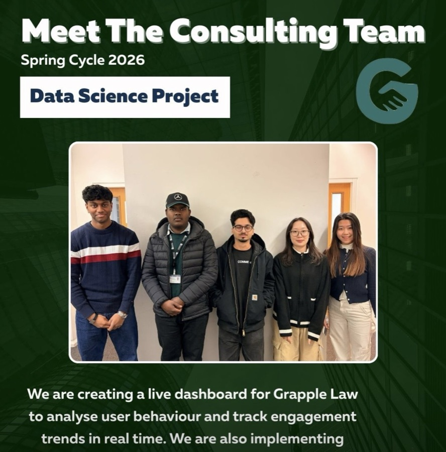

Feedback-Loop Detection Framework
Allianz UK dissertation · 2026
Four-layer Python framework to detect and mitigate a self-fulfilling prophecy loop in a production total-loss model. Loop signature −52%, precision 98.52% → 98.89%.
Causal inferenceSHAPXGBoost
Confidential. Code, data and detailed results cannot be shared.

AdLens
Wise × HuddleHive Women in Tech Hackathon 2026
Undisclosed-advertisement detector for Instagram posts to increase transparency for customers. Fine-tuned DistilBERT on 1.6M posts (disclosure hashtags masked), with Gemini-generated explanations in a FastAPI / Next.js app.
NLPDistilBERTFastAPINext.js
LinkedIn post → · ML & Detection Engine → · Web Application →

Herbicide-Resistance Mutation Agent
London AI×Bio Hackathon 2026 · 2nd of 15 teams
Agentic workflow using GPT-Rosalind, NVIDIA BioNeMo, DiffDock and OpenFold to identify minimal point mutations that confer herbicide resistance while preserving protein structure.
AgentsProtein modelling
LinkedIn post → · GitHub →
Donor Retention Clustering
Allianz UK × Barnardo's Hackathon 2026 · 1 of 2 winning teams
Clustered donors with K-Means on engineered activity features, recommended retention actions and presented the expected donation increase as the monetary impact.
K-MeansFeature engineering
LinkedIn post →
Fraud Detection: Performance vs Carbon
Lloyds × UoB Datathon 2026
Benchmarked 11 ML models for fraud detection and designed a leaderboard that weighs predictive performance against carbon cost.
scikit-learnBenchmarking
LinkedIn post →


Grapple Retention Pipeline & Dashboard
180 Degrees Consulting · 2026
n8n workflows with LLM prompt engineering to nudge legal-platform users toward a subscription, plus a Sankey engagement dashboard across an 11-level case hierarchy.
n8nSendGridSQL
Confidential. The n8n pipeline cannot be shared.
Dashboard on GitHub →
Lumenia
Headstart Global Launchpad EMEA 2026
Led the team in the Healthcare Tech case competition, delivering a fully evidenced B2B mental health platform pitch within six days.
LeadershipHealthcare
LinkedIn post → · GitHub →

TBC
Grok Bot Community Engineering Hackathon, London · Oct 2026
Built in three hours with Grok and cognee: a two-sided platform matching hackathon organisers, university societies and builder clubs with sponsors and hosts, so fewer events are left with sponsors "to be confirmed". Team of four.
GrokcogneeHackathon
GitHub →